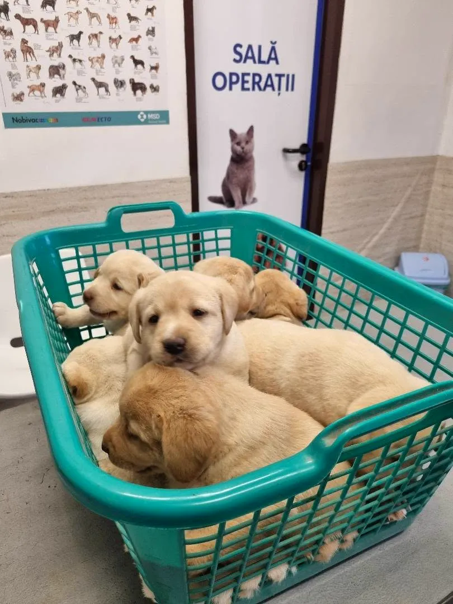
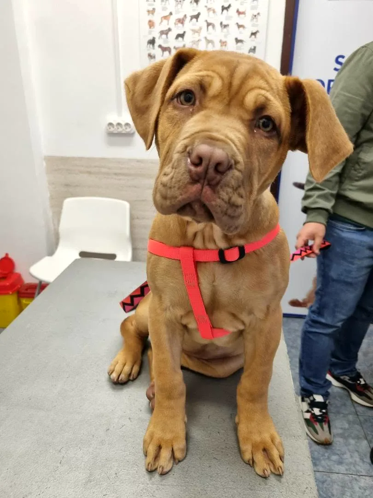
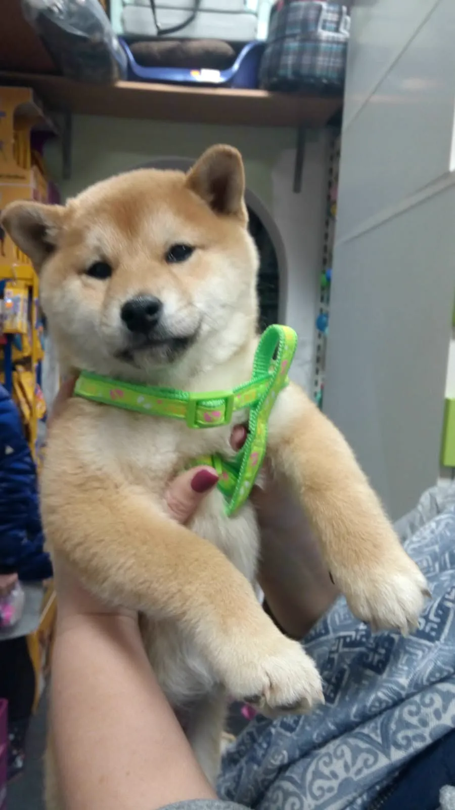
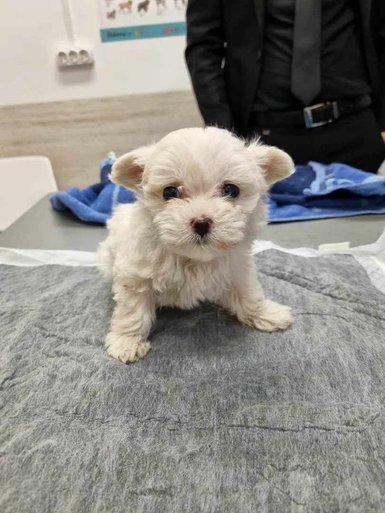
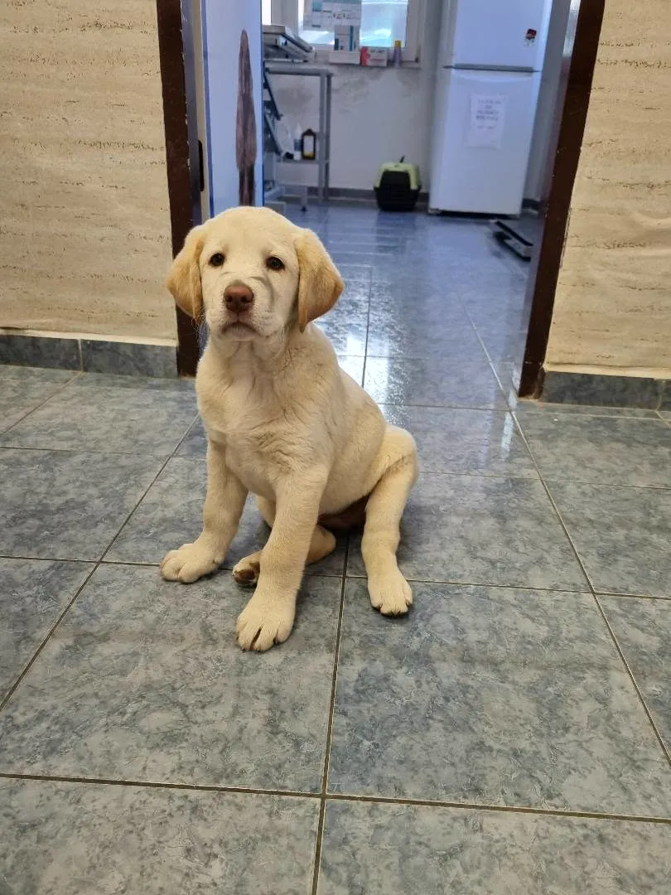
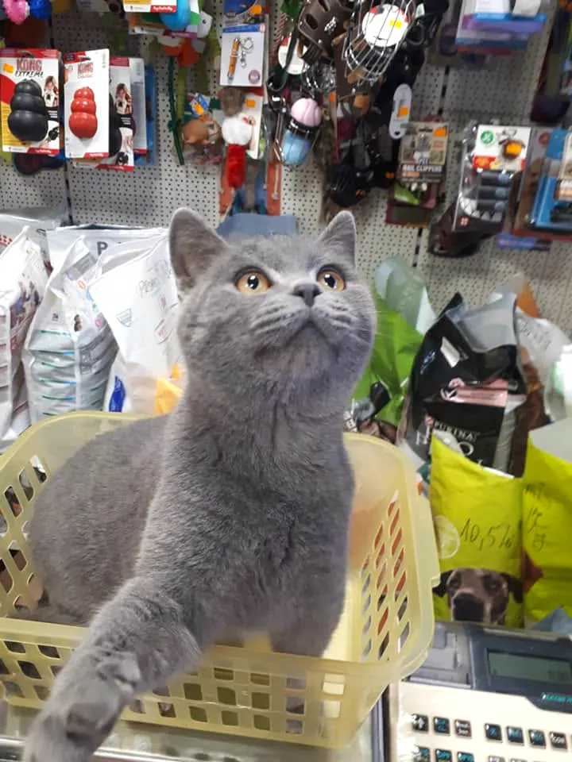
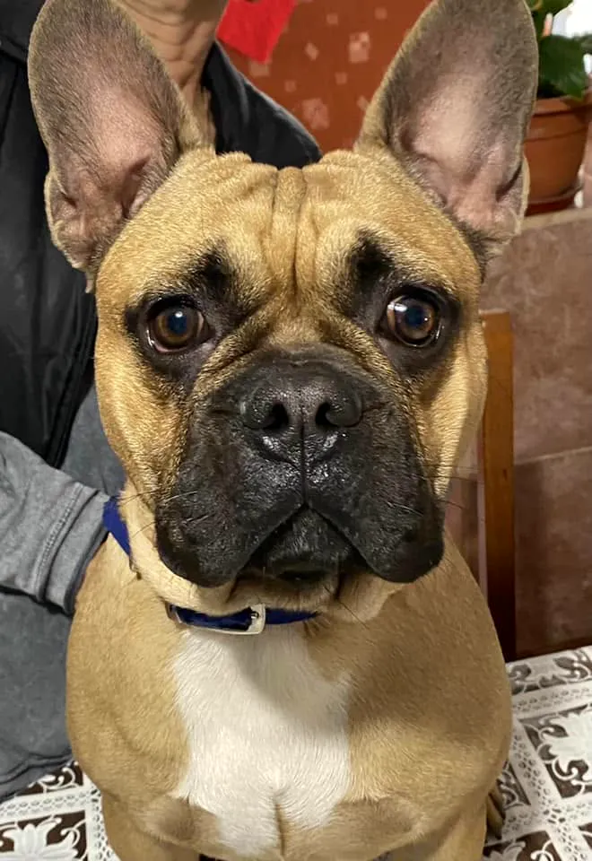
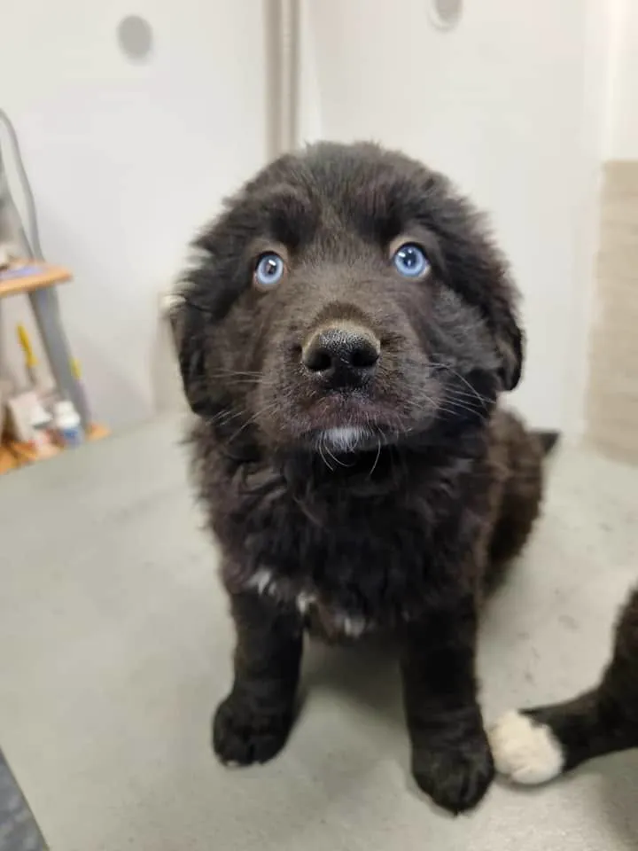

Consultații și tratamente
Consult, pansamente, perfuzii și tratamente pentru câini, pisici și alte animale.
Deschis azi
Consultații, vaccinuri, operații și farmacie veterinară, în același loc. Lucrăm pe bază de programare, ca fiecare animal să primească 20–30 de minute doar pentru el.
4,9 pe Google, din 37 de recenzii


La noi, animalul tău e tratat ca un membru al familiei. Îți explicăm ce are și toate variantele de tratament, fără grabă.
Lucrăm pe bază de programare, așa că aștepți puțin și animalul se stresează mai puțin. Urgențele le primim oricând în timpul programului.
Consult, pansamente, perfuzii și tratamente pentru câini, pisici și alte animale.
Schema completă pentru căței și pisoi, apoi rapelul anual și antirabicul obligatoriu.
Avem sală de operații proprie. Facem sterilizări, castrări și alte intervenții.
Tratamente pentru dinți și gură, ca animalul să mănânce fără durere.
Laborator, teste rapide și analize de piele, ca să știm repede ce are.
Medicamente veterinare, hrană și accesorii pentru animalul tău, tot la noi.

Vino cu carnetul lui și facem schema împreună.
La 0745 358 721. Ne spui ce are și îți dăm o oră.
Aștepți puțin, iar consultul durează 20–30 de minute.
Medicamentele le găsești tot aici, la farmacia noastră.
Urgențele le primim oricând în timpul programului, fără programare.





Mai multe poze pe pagina noastră de Facebook.
Lăbuța arată zilele în care suntem deschiși. Pentru consultații, sună înainte să faci o programare.